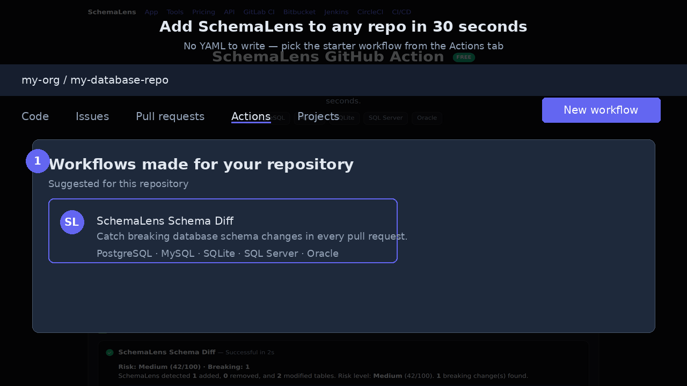

Catch breaking database changes in every pull request. Zero config, zero cost — add schema diff checks to your CI/CD pipeline in 60 seconds.

Pick the template, commit the workflow, and get schema diff reports on every pull request.
🚀 Add starter workflow to your repoRisk: Medium (42/100) · Breaking: 1
SchemaLens detected 1 added, 0 removed, and 2 modified tables. Risk level: Medium (42/100). 1 breaking change(s) found.
ALTER TABLE users
ADD COLUMN email_verified_at TIMESTAMP;
-- ... 12 total migration lines.💡 Full migration SQL is free in every PR. Upgrade to Team for drift alerts →
🔍 SchemaLens Schema Diff Report
| 🟢 Tables Added | 1 |
| 🔴 Tables Removed | 0 |
| 🟡 Tables Modified | 2 |
| ⚠️ Breaking Changes | 1 |
| 📊 Risk Score | 42/100 (Medium) |
Generated Migration
ALTER TABLE users
ADD COLUMN email_verified_at TIMESTAMP;💡 Full migration SQL is free in every PR. Upgrade to Team for drift alerts →
Generated by SchemaLens GitHub Action
🔍 SchemaLens Schema Diff
Risk: Medium (42/100) | Breaking changes: 1
ALTER TABLE users
ADD COLUMN email_verified_at TIMESTAMP;
-- ... 12 total migration lines.💡 Full migration SQL is free in every PR. Upgrade to Team for drift alerts →
Generated by SchemaLens GitHub Action
We use the SchemaLens GitHub Action on this very repository. Every time we update the demo schema files, the action runs and posts a diff summary.
Open a pull request that changes demo/schema-v2.sql to see the PR comment in action.
Breaking changes like dropped columns, removed indexes, or altered constraints get flagged before merge — not after deploy.
Create a real GitHub Check Run that appears in the PR checks tab — just like your test suite. Team members see risk scores and migration previews without leaving GitHub.
Every run generates a markdown summary on the Actions run page with tables, risk scores, full migration SQL, and Team upgrade CTAs. No clicking required.
Every pull request gets a clear schema diff summary posted as a comment. Reviewers see exactly what changed.
Set run-only-on-schema-change: true and the action skips entirely when no .sql files were modified — saving CI minutes and reducing noise.
No database connections, no CLI installation, no license key. Just point the action at two SQL files.
Set fail-on-breaking: true and the workflow fails if any dangerous schema changes are detected.
Each diff gets a 0-100 risk score. High-risk migrations get extra scrutiny in code review.
The action includes breaking change detection, risk scoring, PR comments, Check Runs, Job Summaries, and full migration SQL. No license key required.
Export your database schema to a SQL file as part of your workflow (e.g., pg_dump --schema-only or commit your schema file).
The action compares the schema from your base branch against the schema in the PR. Any drift is surfaced instantly.
Enable post-comment: true and the action posts a formatted summary directly on the pull request.
Send every diff result to the SchemaLens hosted webhook and get rich alerts in Slack or Microsoft Teams — plus a shareable alert page your whole team can view. Free tier includes alerts, shareable URLs, and local dashboard history. Team tier adds persisted server-side history and higher rate limits.
Instant notifications with risk score, breaking changes, and migration preview. Free.
Every alert gets a public link like schemalens.tech/schema-drift-alert.html#... that anyone on your team can open.
Free: local history from opened alert links. Team: persisted server-side history for 90 days.
| Feature | Free Tier | Pro (optional) |
|---|---|---|
| Schema diff summary | ✅ | ✅ |
| Breaking change detection | ✅ | ✅ |
| Risk score | ✅ | ✅ |
| PR comments | ✅ | ✅ |
| GitHub Check Runs | ✅ | ✅ |
| Rich Job Summary | ✅ | ✅ |
| Smart Skip (no SQL changes) | ✅ | ✅ |
| Full migration SQL | ✅ Complete script | ✅ Complete script |
| Markdown export | ✅ | ✅ |
| JSON export | ✅ | ✅ |
| Rate limit | 15/min API · 10/min drift alerts | 30/min API · 60/min drift alerts |
| Schema drift alerts (Slack/Teams) | ✅ | ✅ |
| Persisted alert history | — | ✅ 90 days |